Matemática
Fichas, problemas y juegos en línea
Matemática
Fichas, problemas y juegos en líneaNumeración y operaciones 10 recursos
Numeración 1De 1° a 7° grado
Numeración 2Números de 4 a 8 cifras
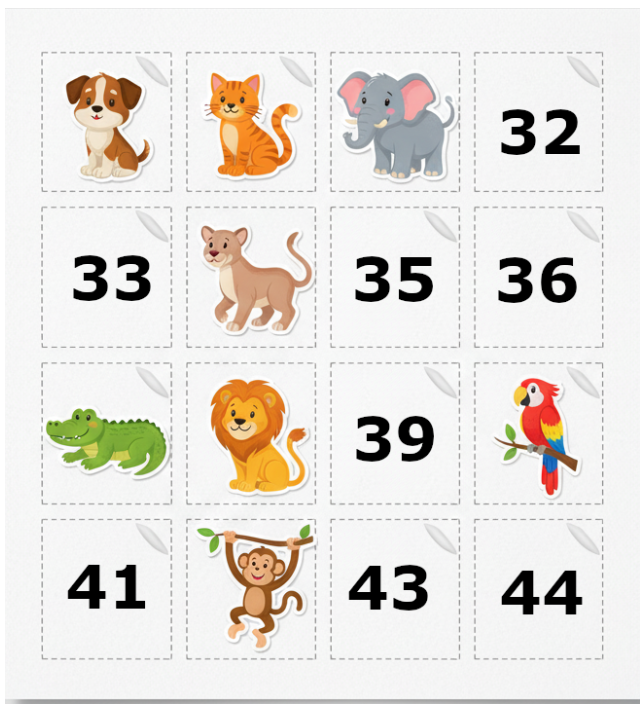
Numeración y operaciones 1Actividades con imágenes
Numeración y operaciones 2Numeración y operaciones con imágenes
Sumas y restasFichas con números de 2 a 6 cifras
Inicio de multiplicación y divisiónSuma y multiplicación
Con las 4 operaciones 1Unidad seguida de 0, dobles, triples, proporcionalidad
Con las 4 operaciones 2Unidad seguida de 0, dobles, triples, proporcionalidad
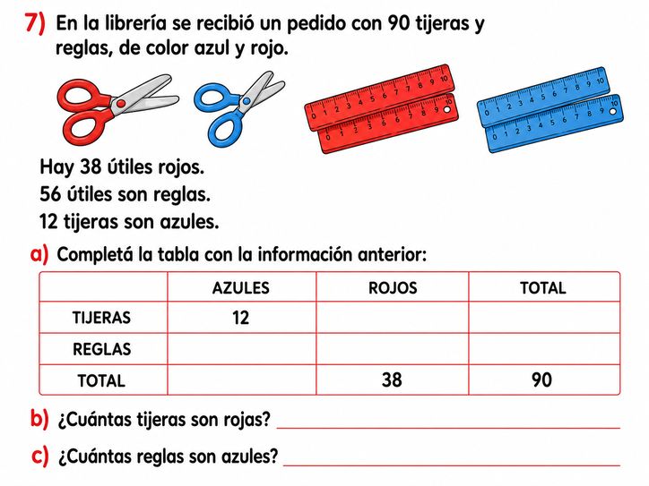
Con imágenesComplementos en el campo aditivo y análisis del algoritmo de la multiplicación
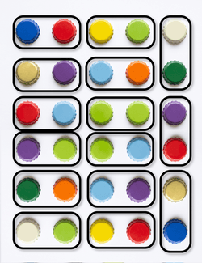
División paso a pasoDiversas formas de ver la división de 30 tapitas
Problemas 4 recursos
Juegos e interactivos en línea 10 recursos
Para las tablasSituaciones con las tablas de multiplicar, de bolsas y caramelos a dobles y mitades
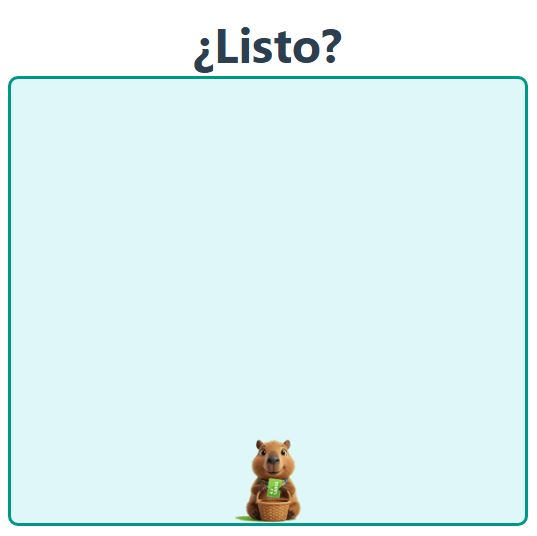
Repertorios de multiplicación4 niveles con la unidad seguida de ceros
Audio númerosBotones con audio
Sumas con dados¿Cuánto suman estos dados?
Sumas con cartasJuego con dificultad creciente
Anterior y posteriorJuego en línea
Memotest de númerosMemoria del orden
NumeraciónEscalas, número y nombre
OperacionesComplementos, dobles
Más con operacionesPróximo número redondo
Diseño curricular C.A.B.A. 8 recursos
Contenidos de Matemática por grado.
Recursos para armar actividades 7 recursos
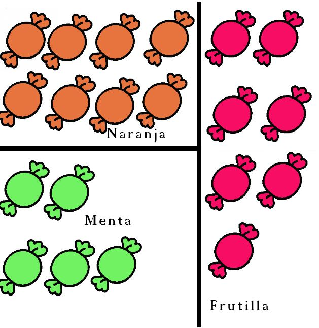
Recursos para imprimir y copiarBolsas con caramelos, cartas con fósforos, dados, tarjetas Montessori, tabla pitagórica
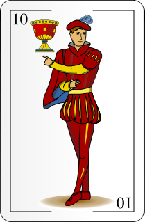
Cartas españolasPara copiar, pegar y usar en el armado de actividades
Campo multiplicativoMapeo para la planificación docente
Campo aditivoMapeo para la planificación docente
Repertorio campo aditivoActividades relacionadas con los repertorios
Tareas matemáticasListado de tareas y su pertinencia
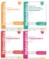
Índice de TrayectoriasÍndices de los 3 libros de “Trayectorias”
Lengua
Textos, actividades e interactivos
Lengua
Textos, actividades e interactivosAlfabetización 6 recursos
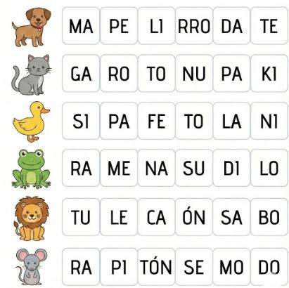
Armar con sílabasElegir sílabas
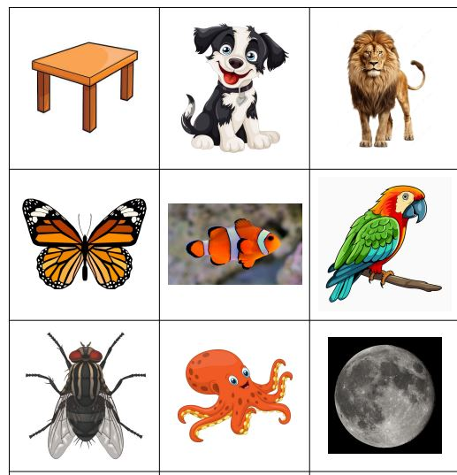
Letra inicialVocales - MPLS
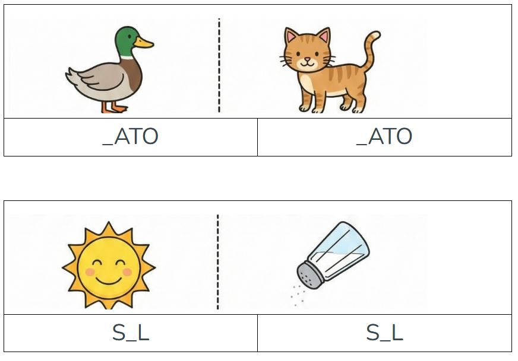
Pares de palabrasLetra ausente
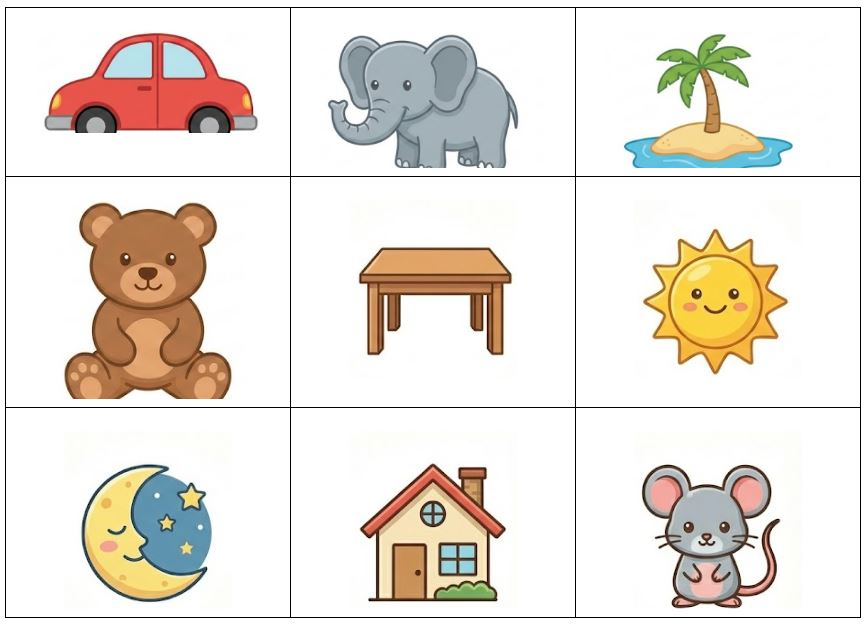
Bingo de palabras10 cartones con imágenes
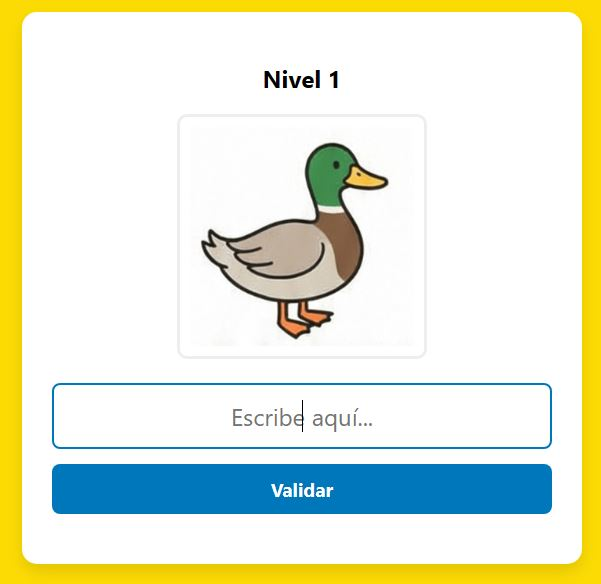
Escribir palabrasImágenes para escribir etiquetas, con distintos niveles (CV, VCV, CCV)
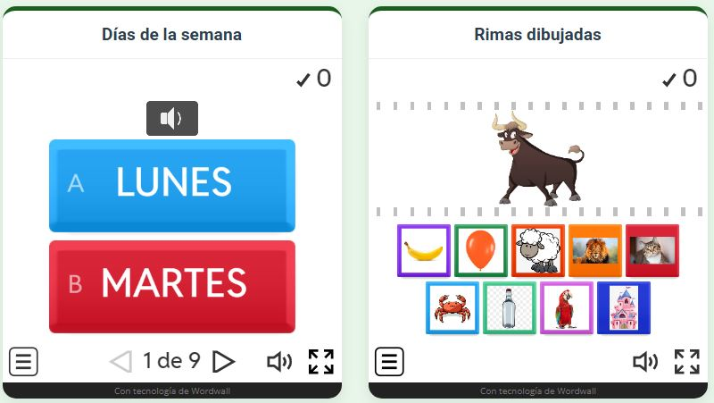
Zona juegosJuegos para identificar palabras y sonidos, con audios
Textos y secuencias 4 recursos
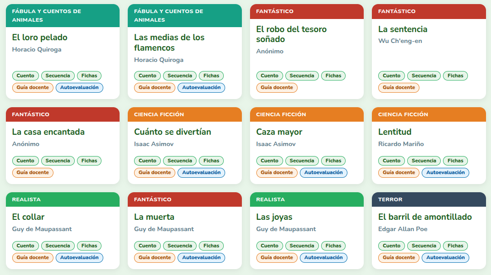
Secuencias y fichasTextos organizados en secuencias, con fichas listas para imprimir
Textos - Primera versiónPrimera organización de textos y actividades del sitio
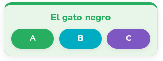
Actividades mixtasActividades para resolver en línea, incluidas autoevaluables
Lectura autónomaActividades de lectura para realizar con libros que llegaron a las escuelas
Autoevaluables y juegos 2 recursos
Se elige el texto, se realizan las actividades y luego se pueden descargar y enviar por Classroom u otra plataforma.
Diseño curricular C.A.B.A. 7 recursos
Contenidos de Lengua por grado.
Recursos para armar actividades 5 recursos
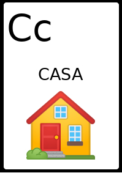
LetrasCartas con letras e imágenes y letras sueltas
Galería de mascotasTodas las imágenes de las mascotas del sitio
El fantasma de CantervilleCapítulo 1 · Ejemplo de actividades con el texto
El fantasma de CantervilleCapítulo 2 · Ejemplo de actividades con el texto
La Bella y la BestiaEjemplo de actividades con el texto